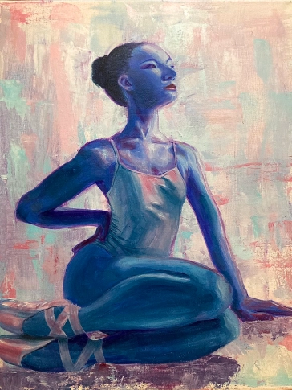

Dance
Acrylic, 2022
This is an acrylic painting inspired by the art of dancing. It represents the grace and strength that a dancer must balance and the self-discipline within the art itself. In the painting, I experimented with different values and limiting my color palette. This piece was made for my AP portfolio which was about the beauty of the women and nature.

Sunflower
Acrylic, 2022
Painting was done on acrylic paper 9”x12”. This piece is one in a series called , My Garden. My Garden represents nature and the life it holds. It is meant to evoke the empathy that we lack towards nature.